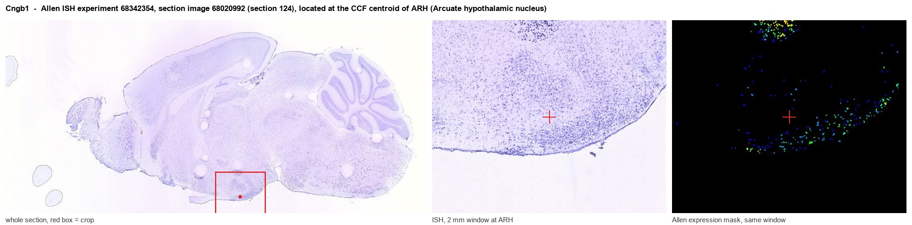
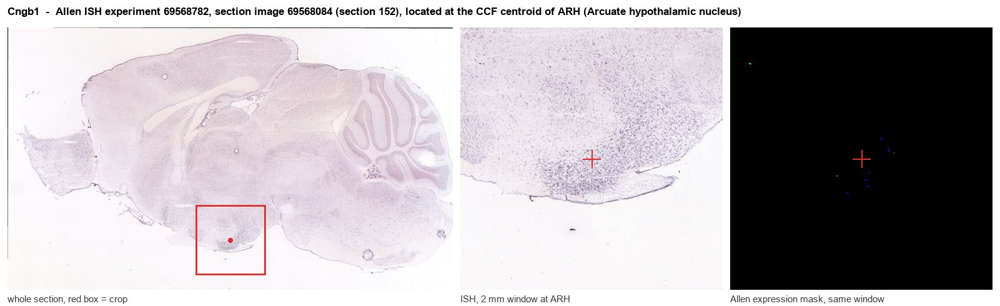
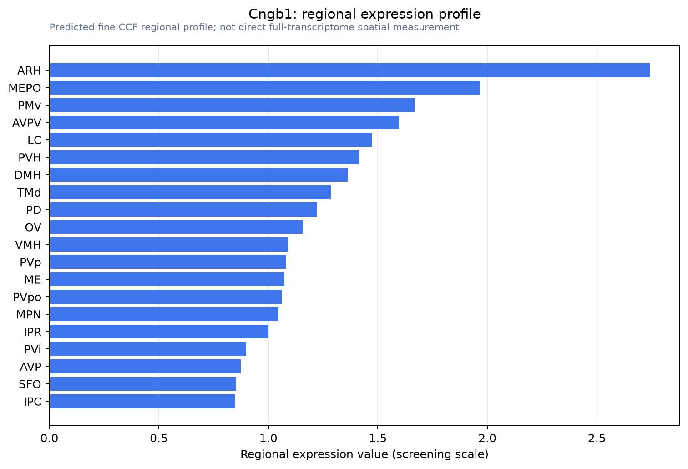

Cngb1
Cyclic nucleotide-gated channel beta-1 (Cyclic nucleotide-gated cation channel 4) (CNG channel 4) (CNG-4) (CNG4)
Spatial tier: REGION_BIASED · Class: ION_CHANNEL · Top region: ARH (Arcuate hypothalamic nucleus) · Positive regions: 32/554
Function in ARH: evidence, prediction, innovation
- Gene function
- CNGB1 is the modulatory beta subunit of cyclic-nucleotide-gated cation channels. It cannot form a channel alone but co-assembles with CNGA1 in rod photoreceptors and, as CNGB1b, with CNGA2/CNGA4 in olfactory neurons, conferring cGMP/cAMP sensitivity, Ca2+-calmodulin feedback, L-cis-diltiazem block and ciliary trafficking; its GARP domain anchors the channel.
- Region function
- The arcuate hypothalamic nucleus sits beside the median eminence and reads circulating leptin, insulin and ghrelin through a leaky barrier. Its AgRP/NPY, POMC and Kiss1 neurons set food intake, energy expenditure and neuroendocrine output.
- Published in this region
- none No region-specific literature found. Lopez-Jimenez et al. 2012 showed functional CNGA1/CNGB1 cGMP-gated channels in rat cerebellar granule neurons, where cGMP-evoked Ca2+ entry shapes boutons and growth cones, proving CNGB1 channels work in central neurons outside sensory epithelia.
- Predicted function
- Prediction: ARH neurons sit in a nitric-oxide-rich, natriuretic-peptide-exposed field where guanylate cyclases generate cGMP, and Cngb1 would supply the depolarising Ca2+-permeable cGMP-gated conductance translating that cGMP into firing rate, plausibly in NPY/AgRP or Kiss1 cells. Losing Cngb1 should remove a tonic depolarisation, dampening fasting-induced AgRP activation and NO-dependent GnRH pulse modulation. Global knockouts are confounded by blindness and anosmia, so conditional or AAV knockdown is required.
- Innovation
- ★★★★★ 5/5 CNGB1 is treated almost exclusively as a retinal and olfactory gene, so a hypothalamic feeding role would be entirely new and the needed reagents already exist.
- Tools
- Cngb1 knockout mouse (Huttl 2005); rAAV5.hCNGB1 gene replacement (Wagner 2021); blocker L-cis-diltiazem; membrane-permeant cGMP analogues (8-Br-cGMP) and sGC stimulators; validated anti-CNGB1 antibodies. No Cngb1-Cre line, so AAV-shRNA or CRISPR in Agrp-Cre/Pomc-Cre mice is the practical route.
- References
Direct evidence located at the region

Allen ISH experiment 68342354, section image 68020992 (section 124): the section that contains the CCF centroid of Arcuate hypothalamic nucleus according to the Allen image-to-atlas alignment (reference_to_image), with a 2 mm window around that point. Left: whole section, red box = window. Middle: ISH signal. Right: Allen's expression-mask view of the same window. open this image in the Allen viewer

Allen ISH experiment 69568782, section image 69568084 (section 152): the section that contains the CCF centroid of Arcuate hypothalamic nucleus according to the Allen image-to-atlas alignment (reference_to_image), with a 2 mm window around that point. Left: whole section, red box = window. Middle: ISH signal. Right: Allen's expression-mask view of the same window. open this image in the Allen viewer
Direct spatial evidence

Regional expression figure

Predicted WMB × fine-CCF profile; not direct full-transcriptome spatial measurement.
Spatial profile
Evidence and specificity
- Evidence status
- PREDICTED_FINE
- Direct sources
- None; predicted localization only
- Exclusive threshold
- 12 positive regions out of 554
- Spatial specificity
- 0.318
- Top-region fraction
- 0.056
- Filter status
- PASS
Interpretation limits
- Cell-type-to-region projection is imputed expression, not direct spatial measurement.
- Adult reference atlases do not establish stability across age, sex, strain, state, or disease.
- Transcript abundance does not guarantee protein abundance or genetic-tool performance.